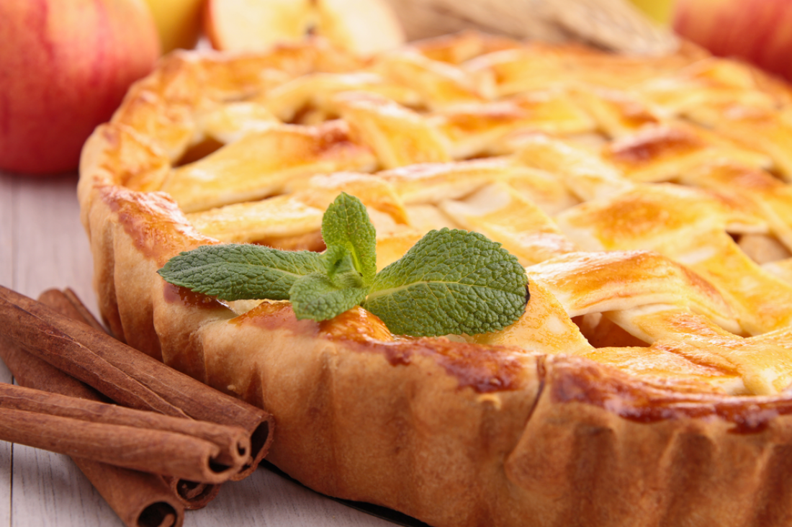

Crostata
Ingredients
- Three cups of fresh berries
- 1 and a 1/2 cups and three tablespoons of white flour
- 3 tablespoons of powdered sugar
- ¼ cup of granulated sugar
- 2 tablespoons of yellow cornmeal
- 9 tablespoons of cold, unsalted butter
- large egg yolk
- 3 tablespoons of ice water
- big egg white
- Lemon ice cream for serving
- 1 tablespoon of sugar, one egg white, beaten with two tablespoons of water
Recipe
- Mix the berries with three tablespoons of flour and fine sugar in a bowl and keep it aside
- We prepare the shelves of the first and third ovens in the oven while preheating the oven to a temperature of 180 degrees Celsius
- We mix the remaining flour, granulated sugar and cornmeal in an electric mixer, beating them well to make the texture like fine sand.
- Add the butter while continuing to beat, then put the egg yolk and water while continuing to beat to form a soft dough
- We add a tablespoon of water each time as needed, then we collect the dough in the form of balls and divide them into two equal parts
- We stretch each piece of dough into a disk and put them in the bowls
- Divide the berry filling between the two disks, leaving an indentation around the edges of each disk
- Sprinkle the remaining flour and sugar mixture over the berries
- Brush the dough with a mixture of egg whites, sprinkle it with sugar, and put it in the oven for half an hour
- We replace the pots in the oven racks and continue baking until the crust is red and bubbles rise over the filling and serve with ice cream.